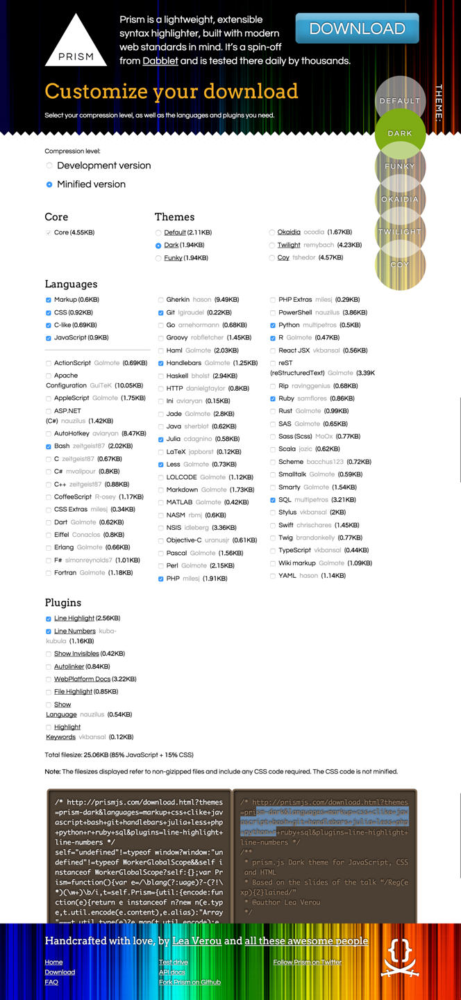

Adding prism.css/prism.js to Ghost Blogs

So if you are a frequenter of this blog, you may have noticed that the aesthetics of the code on this blog has changed. It's not quite as ugly as this anymore:
for element in my_list:
do_something(element)
But, all of a sudden, now it looks like this:
for element in my_list:
do_something(element)
So how did I do this? I simply used a small library called Prism. So let's go through how to install this if you are a fellow Ghost user!
Step 1: Download Prism
Go to http://prismjs.com/download.html and download the config of the file you want. I've attached a pic of the options I used.

Once you pick the options download the separate css and js files and put it into your theme. It should be in a path like this:
cd /ghost-installation/content/themes/your_theme/assets/css
cd /ghost-installation/content/themes/your_theme/assets/js
Now all you have to do is restart your ghost instance.
Step 2: Using Prism
Now the next time you use write a code block in the markdown editor, type "language-python" or whatever language you're using after the first set of ```.
```language-python
#Your code here
```
That's it! Now your code will look that much better on your blog!
#Your code here
What I Learned Today:
Postgresql requires the use of single quotes for checking equality in where statements (if you're wondering why the code you've been trying for 20 min doesn't work!)